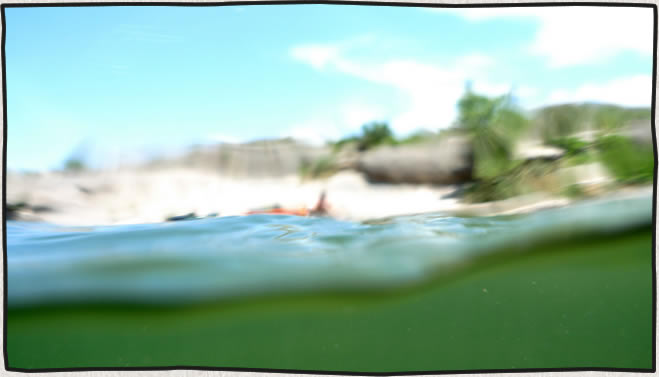
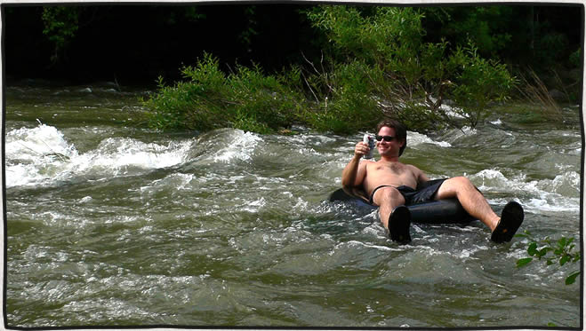
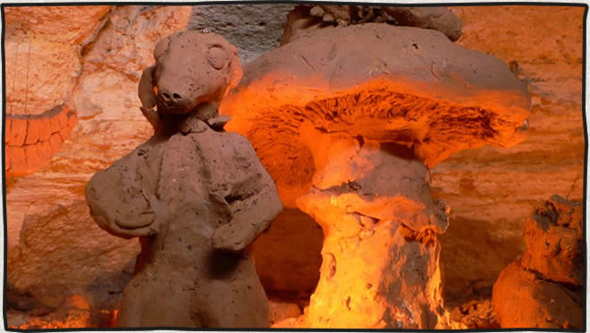

The Devils River, Memorial Day 2010
posted Jun 21, 2010 Put in at Baker’s Crossing on Friday, May 28th and paddled to The Indian Head Ranch 40 miles down river.
Read more...Devil's River Kayaking
posted Apr 14, 2009
On Friday, November 28th through Monday, December 1st Mike Longfellow and I paddled the Devils River from Baker’s Crossing to Rough Canyon Marina (47 miles). This river is notoriously pristine and remote. The weather was perfect and there was plenty of good fishing and rapids along the way.
Comment [3]
Read more...Ice Climbing Video Made From Photographs
posted Apr 13, 2009That’s me leading and Paul Bostrom following and taking the ice screws out.
The frozen waterfall is located just off the highway past Wolf Creek Ski area in Colorado.
Read more...Mount Rainier via the Kautz Glacier route
posted Apr 12, 2009Rob, Ryan and I climbed the Kautz Glacier route on Mount Rainier, July 22 – July 25. We summited at noon on Thursday, July 24 (my birthday)
Read more...Madsen Cycles Bucket Bike
posted Apr 11, 2009The first Saturday of SXSW 2009 was the Bike Hugger Mobile Social Ride. It was pretty short, fun ride around Austin starting at couple block away from Mellow Johnny’s bike shop. One girl had bike made from bamboo and horn. No one seemed to mind the ride was short since it ended with free bar-b-que, beer and a raffle ticket for chance to win one of two bikes available (also an apple tv and a bunch crumpler bags). Mine was the last number called and it was for the Madsen Cycles bucket bike.
Comment [1]
Read more...Project Nature
posted Mar 17, 2009While climbing at Gus Fruh on the greenbelt one afternoon I saw an empty bird nest. I drew this little guy to fill the nest and leave behind for someone else to find. It probably sitting on a shelf in someone’s apartment now. A couple weeks later I checked on it while out climbing again – someone made off with the nest and all.
Read more...Tubing and Kayaking Barton Creek
posted Mar 12, 2009 Barton Creek, on the green belt in Austin, is usually a dry, rocky creek bed. Every few years we are lucky enough to receive enough rain in the area to fill it up long enough for a few runs in the tubes or kayaks. 2007 was the last year the creek maintained enough water to run.
Read more...Airmans's Cave to the Aggie Art Gallery
posted Mar 02, 2009 On Sunday March, 4 2007 my friends Mike and Julian and I decided to check out Airman’s Cave on the Greenbelt in Austin. We have read and heard stories about the cave which is only a few miles from where I live near Barton Springs.
Comment [1]
Read more...Mount Baker Coleman Headwall Route
posted Apr 01, 2008July 24th, 2007 we summited Mount Baker by the Coleman Headwall route. If I had submitted the story of our climb to the American Alpine Club’s Journal of North American Climbing Accidents the title would have read: “Late start, didn’t carry over, failure to leave climbing plan with rangers”. Luckily we didn’t have an accident, just a little late.
Comment [1]
Read more...
Get in touch
Patrick [at] MountainDrawn.com